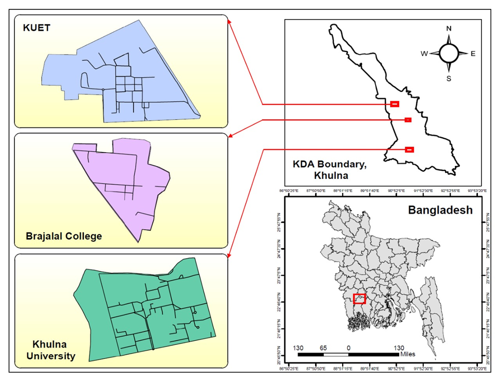
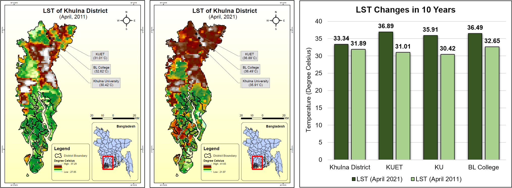
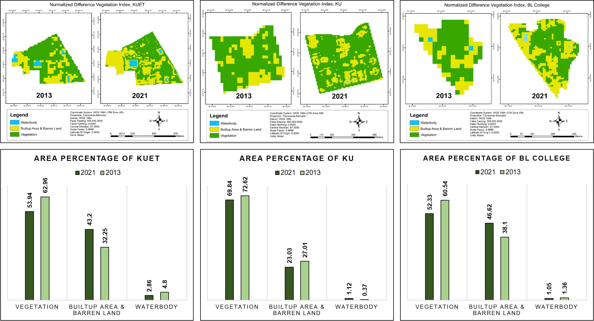
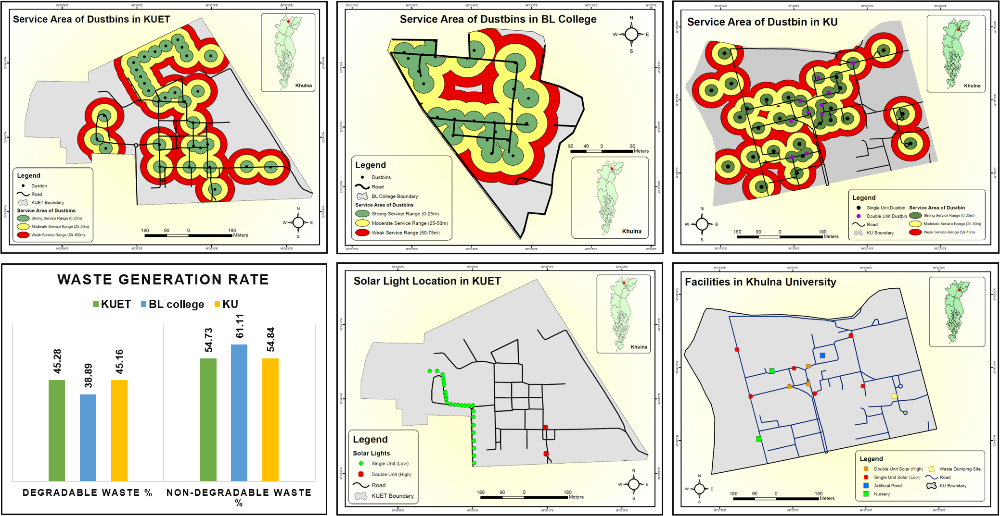

Objectives
The objective of this study is to assess and compare the EMS practices of Khulna University of Engineering & Technology (KUET), Government Brajalal College (BL College), and Khulna University (KU) using spatial, environmental, and survey data.
Study Area
Khulna City, located in the southwestern coastal region of Bangladesh (22.49°N, 89.34°E), serves as a major regional center and provides a suitable setting for this study. To capture student perspectives effectively, three leading higher education institutions were selected.
- KUET: A leading public engineering university established in 2003 (originating in 1967), located about 13 km from Khulna city, with multiple faculties, institutes, and a well-planned 101-acre campus.
- KU: Established in 1991 near Gollamari, this multidisciplinary public university hosts several schools and disciplines across a 105-acre campus, supporting active research and academic activities.
- BL College: One of the oldest institutions in the region, founded in 1902, located near Daulatpur; it offers a wide range of programs, serving a large student population.

Key Findings (Temporal LST Change)
- Khulna district experienced a noticeable temperature rise of 1.45°C over the decade (31.89°C in 2011 to 33.34°C in 2021), indicating a clear intensification of heat conditions.
- KUET recorded the highest rise, with temperature increasing by 5.88°C (31.01°C to 36.89°C), suggesting strong localized warming effects.
- Khulna University and BL College also showed substantial increases of 5.49°C and 3.87°C, respectively, reflecting a consistent warming pattern across all study areas.
- Among the three sites, KUET had the highest temperature (36.89°C), followed by BL College (36.49°C) and Khulna University (35.91°C), despite their close geographic proximity.

Key Findings (Temporal NDVI Change)
- KUET shows strong urban expansion: Vegetation dropped from 62.96% to 53.94%, while built-up area rose sharply from 32.25% to 43.2%, indicating rapid infrastructure growth at the cost of green cover.
- KU maintains relative balance: Vegetation saw only a slight decline (72.62% → 69.84%), while built-up area actually decreased (27.01% → 23.03%), suggesting controlled development and effective greenery preservation.
- BL College follows expansion trend: Vegetation reduced from 60.54% to 52.33%, while built-up area increased from 38.1% to 46.62%, reflecting steady urban pressure similar to KUET.
- Water bodies show minor but notable shifts: KUET and BL College experienced slight declines (e.g., 4.8% → 2.86% at KUET), while KU saw a small increase (0.37% → 1.12%), indicating localized land-use changes.
- Overall pattern: Both KUET and BL College highlight a clear trade-off between vegetation and built-up growth, whereas KU stands out for maintaining a more sustainable land-use balance despite institutional expansion.

Key Findings (Renewable Energy & Waste)
- KUET installed limited solar panels near the IT Center and main gates; KU has 3 double-unit and 6 single-unit panels, while BL College has none.
- KU introduced two plant nurseries and a stormwater pond, enhancing campus sustainability.
- KUET operates a functional waste management plant with daily collection, segregation, and composting.
- KU is constructing a new waste management plant and currently uses 70–80 dustbins with electric vans.
- BL College relies on the city corporation for waste collection, with no internal management.
- Dustbin coverage analysis shows strong service within 0–25 m core areas but weak coverage beyond 50 m.
- Overall Environment Management System Ranking: KUET > KU > BL College.

Key Findings (Environmental Issues)
- Salinity clearly dominates in coastal campuses, ranking 1st in KUET and BL College, with about 47% (KUET) and 42% (BL College) of students identifying it as a severe problem.
- Extreme weather is a shared major concern, ranking 2nd in KUET and KU, and 3rd in BL College, with nearly 49% of KUET students calling it a severe issue.
- KU stands out with a management-driven issue, where rubbish disposal ranks 1st, and about 31% of students consider it a significant problem due to ongoing construction.
- Deforestation reflects ongoing campus expansion, ranking 3rd in both KUET and KU, showing visible loss of greenery linked to development activities.
- Water pollution is a critical issue at BL College, ranking 2nd, with a notable share of students identifying it as a serious environmental concern.
- Other issues remain widespread but secondary, as pollution (air, soil, noise) and biodiversity loss consistently appear in mid to lower ranks across all campuses, indicating cumulative environmental pressure.